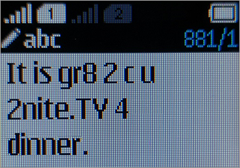

"Merry Christmas"
That was the first SMS message, sent in December 1992 from a software developer in the United Kingdom.
SMS was designed as a "short message service" between mobile phones. The messages needed to be short because mobile phone networks had constrained bandwidth at the time. A German engineer proposed the 160 character limit, justifying it based on the average length of postcard messages and telegrams.
